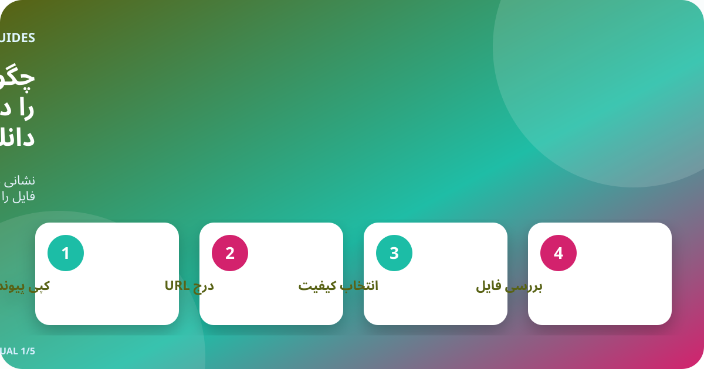
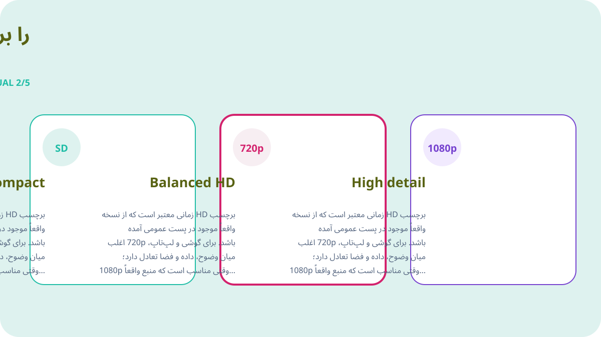
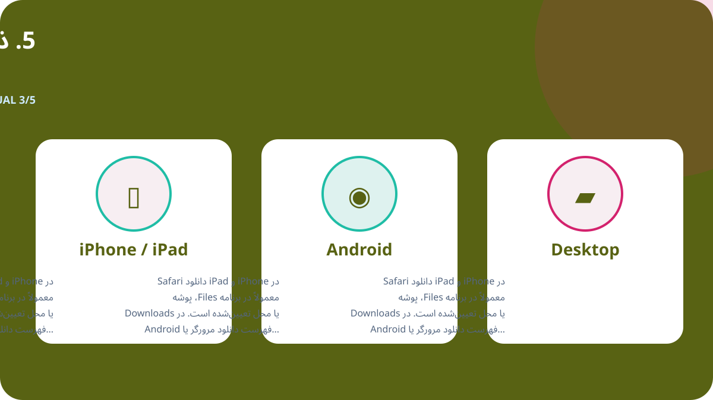
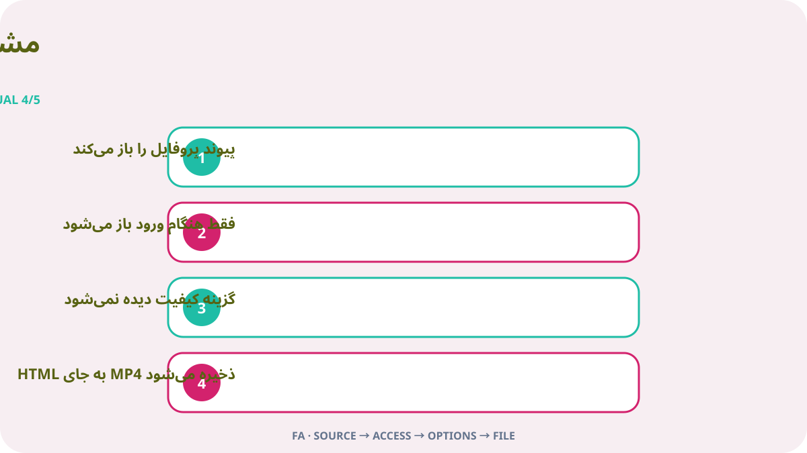

پاسخ کوتاه
پست تکی X را که ویدیو دارد باز کنید، عمومی بودن آن را بسنجید و از منوی اشتراکگذاری پیوند پست را کپی کنید. نشانی را در Downloader-X قرار دهید، یک گزینه MP4 که واقعاً در نتیجه دیده میشود انتخاب کنید و پس از ذخیره ابتدا، میانه و پایان فایل را پخش کنید. این کار فقط برای ویدیوی خودتان، رسانه با مجوز سازگار یا محتوایی است که مالک آن اجازه داده است. پردازش پیوند عمومی نباید رمز X، کد تأیید، کوکی مرورگر یا دسترسی از راه دور بخواهد.

1. دسترسی عمومی و حق استفاده را بررسی کنید
از پست اصلی آغاز کنید، نه پروفایل، نتیجه جستوجو، اسکرینشات یا پیشنمایش بازفرستادهشده. URL را در زبانهای تازه باز و حساب، متن، تصویر بندانگشتی و مدت را مقایسه کنید. عمومی بودن فقط وضعیت دسترسی کنونی را نشان میدهد و خودبهخود اجازه بازنشر، ویرایش، فروش یا تبلیغ نمیدهد. اگر حساب محافظتشده، پست حذفشده، نیازمند ورود ویژه یا محدود است، متوقف شوید و نسخه مجاز را از مالک بخواهید و کنترل دسترسی را دور نزنید.
حق نشر، رضایت و اعتبار
نمایش عمومی تنظیم دسترسی است، نه مجوز استفاده. فقط ویدیوی خود، رسانه با مجوز سازگار یا محتوای دارای اجازه روشن را ذخیره کنید. برای بازنشر، ویرایش یا استفاده تجاری مطمئن شوید اجازه آن کار را پوشش میدهد و مدرک کتبی نگه دارید. به افراد، اطلاعات خصوصی، مکانهای حساس و کودکان حاضر در ویدیو احترام بگذارید و اثر دیگران را از آن خود معرفی نکنید.
2. نشانی دقیق پست را کپی کنید
پیوند ورودی باید یک پست مشخص دارای ویدیو را نشان دهد. در X از منوی اشتراکگذاری گزینه کپی پیوند پست را بزنید و آن را یک بار در زبانهای تازه باز کنید. URL پروفایل یا تایملاین چند پست دارد و رسانه هدف را مشخص نمیکند. این بررسی ساده خطای پیوند را از اختلال سرویس جدا میکند و از کلیکهای تکراری و فایلهای ناقص یا تکراری جلوگیری میکند.
- پست اصلی ویدیو را باز و وارد صفحه تکی آن شوید.
- از اشتراکگذاری پیوند را کپی کنید و URL را دستی ننویسید.
- دامنه x.com یا twitter.com و پست بودن URL را بررسی کنید.
- در زبانه تازه حساب، متن، تصویر و ویدیو را تطبیق دهید.
- نشانی منبع و مدرک اجازه را همراه فایل نگه دارید.
3. پیوند را وارد و فقط نتیجه واقعی را انتخاب کنید
URL بررسیشده را در دانلودر X وارد و پردازش را یک بار آغاز کنید. منتظر گزینههای واقعی بمانید و عنوان یا پیشنمایش را با پست اصلی بسنجید. فقط قالب و وضوحی را انتخاب کنید که در نتیجه نمایش داده شده است. اگر منبع 4K یا 1080p ندارد، ادعای تبلیغاتی را گزینه واقعی ندانید. هنگام شکست باید پیام روشن دیده شود؛ صفحه HTML، نصبکننده یا فایل نادرست نباید به عنوان ویدیوی موفق تحویل شود.
ویدیوی نمایشی اصلی فارسی
این ویدیو فقط برای همین صفحه با تصاویر، رنگها و نوشتههای متفاوت از زبانهای دیگر ساخته شده است.
4. HD را بر پایه منبع و نیاز انتخاب کنید
برچسب HD زمانی معتبر است که از نسخه واقعاً موجود در پست عمومی آمده باشد. برای گوشی و لپتاپ، 720p اغلب میان وضوح، داده و فضا تعادل دارد؛ 1080p وقتی مناسب است که منبع واقعاً آن را ارائه دهد و جزئیات صفحه بزرگ لازم باشد. دو فایل با وضوح یکسان ممکن است بیتریت، کدک و فشردهسازی متفاوت داشته باشند، پس فایل را پخش کنید و فقط به نام آن تکیه نکنید. اگر صدا مهم است گزینه ترکیبی تصویر و صدا را انتخاب و پس از ذخیره مسیر صوتی را بررسی کنید.

5. ذخیره در iPhone، Android، Windows یا Mac
در iPhone و iPad دانلود Safari معمولاً در برنامه Files، پوشه Downloads یا محل تعیینشده است. در Android فهرست دانلود مرورگر یا Files را ببینید. در Windows، macOS، Linux و ChromeOS پیش از تکرار، پوشه Downloads و تاریخچه مرورگر را بررسی کنید. اگر فضا کم است نسخههای غیرضروری را پاک یا وضوح پایینتر انتخاب کنید. تنها به دلیل ادعای یک صفحه، مدیر دانلود یا افزونه ناشناخته نصب نکنید.

6. فایل ذخیرهشده را تأیید کنید
ناپدید شدن نوار پیشرفت پایان کار نیست؛ فایل باید واقعاً به شکل ویدیو باز شود. پیش از بایگانی یا اشتراک بررسی کنید:
- نوع فایل با انتخاب مانند MP4 یکی است و HTML یا نصبکننده نیست.
- اندازه صفر نیست و با مدت و کیفیت تناسب دارد.
- ابتدا، میانه و پایان برای تصویر، مدت و صدا پخش میشوند.
- نام، پوشه، URL منبع و اجازه یا مجوز ثبت شده است.
پیش از نگهداری بلندمدت منبع را ثبت کنید
برای پروژه چندکلیپی حساب، تاریخ پست، URL دائمی، توضیح کوتاه، نسخه انتخابی، اندازه و مبنای اجازه را بنویسید. این کار از بیمنبع شدن فایل جلوگیری و بررسی اعتبار و مجوز را آسان میکند. در پست نقلشده، پاسخ یا رشته، URL پستی را کپی کنید که واقعاً ویدیو را دارد، نه پستی که فقط آن را نقل یا دربارهاش صحبت میکند.
مشکل را از منبع تا فایل مرحلهای پیدا کنید

پیوند پروفایل را باز میکند
به پست ویدیو برگردید و از اشتراکگذاری URL را بگیرید؛ پروفایل یک رسانه را تعیین نمیکند.
فقط هنگام ورود باز میشود
ممکن است محافظتشده یا محدود باشد. اطلاعات ورود یا کوکی ندهید و نسخه مجاز بخواهید.
گزینه کیفیت دیده نمیشود
وجود پست، ویدیوی بومی و باز شدن URL را بررسی و فقط یک بار تازهسازی کنید.
HTML به جای MP4 ذخیره میشود
فایل را پاک کنید، پسوند را عوض نکنید و URL و گزینه واقعی ویدیو را دوباره بسنجید.
ویدیو صدا ندارد
پست اصلی، صدای دستگاه و پخشکننده معتبر دیگری را امتحان و در صورت نیاز گزینه ترکیبی را انتخاب کنید.
امنیت و حریم خصوصی
فرایند پیوند عمومی به رمز X، کد دومرحلهای، کوکی صادرشده، کنترل از راه دور، فایل اجرایی یا خاموش کردن حفاظت دستگاه نیاز ندارد. اگر .exe، .dmg یا افزونه نامربوط عرضه شد، متوقف شوید. پیش از باز کردن دامنه، نوع و منبع را بررسی کنید. در دستگاه مشترک فایل مجاز را از پوشه عمومی منتقل و نسخههای موقت غیرضروری را حذف کنید.
فایلها را مرتب و از تکرار جلوگیری کنید
نام فایل میتواند موضوع کوتاه، حساب، تاریخ و کیفیت داشته باشد، مانند topic_creator_2026-08-30_720p.mp4. پوشه موقت و تأییدشده را جدا و فقط نسخه لازم را نگه دارید. کلیک تکراری کیفیت را بهتر نمیکند و معمولاً کپی یا فایل ناقص میسازد. URL منبع، اعتبار و شرایط استفاده را در یادداشت یا جدول همان پروژه ذخیره کنید.
فهرست نهایی ۶۰ ثانیهای
- URL پست ویدیوی درست را باز میکند.
- پست بدون دور زدن کنترل عمومی است.
- مالک یا دارای اجازه ذخیره هستید.
- سرویس ورود یا کوکی نمیخواهد.
- کیفیت انتخابی در نتیجه واقعی دیده میشود.
- دستگاه فضای کافی دارد.
- نوع و اندازه فایل منطقی است.
- تصویر و صدا کامل پخش میشود.
- منبع و اعتبار ثبت شده است.
- استفاده بعدی از اجازه فراتر نمیرود.
پرسشهای رایج
پیوندهای x.com و twitter.com هر دو کار میکنند؟
بله، اگر به همان پست عمومی برسند و مقصد بررسی شده باشد.
چرا همیشه 1080p نیست؟
وضوح به فایل منبع و نسخههای واقعاً موجود وابسته است.
میتوان از حساب محافظتشده دانلود کرد؟
خیر. این راهنما فقط برای پست عمومی است و محدودیت را دور نمیزند.
فایل در iPhone کجاست؟
معمولاً در Files، پوشه Downloads یا محل تنظیمشده Safari است.
اگر HTML گرفتم چه کنم؟
آن را حذف کنید، تغییر نام ندهید و URL و گزینه ویدیو را دوباره بررسی کنید.
آیا پست عمومی را میتوان فوراً بازنشر کرد؟
خیر. مجوز یا اجازهای لازم است که بازتوزیع و کاربرد موردنظر را پوشش دهد.
زبانهای دیگر و راهنماهای مرتبط
با URL پست عمومی تأییدشده آغاز کنید
پیوند درست را وارد، فقط کیفیت موجود را انتخاب و پیش از استفاده فایل را بررسی کنید.
استفاده از Downloader-X برای X